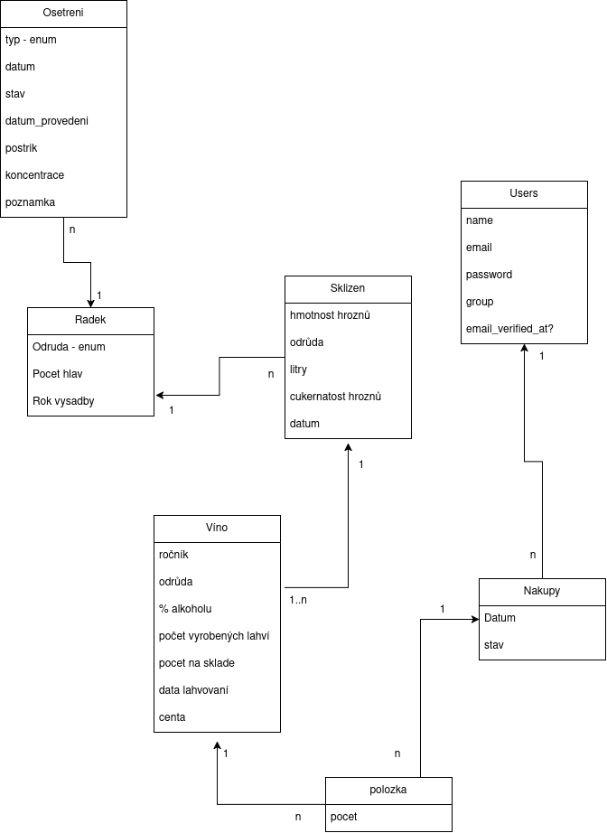

Vinaøství
- Autoøi
- Czudek Tomasz
xczudet00@stud.fit.vutbr.cz -
Nakupování - objednávky, ko¹ík..., Správa vín, lahvování, evidence sklizní
- Gruszkowski Matìj
xgruszm00@stud.fit.vutbr.cz -
Správa èinností, správa øádkù, evidence o¹etøení
- Kohut Jan
xkohutj00@stud.fit.vutbr.cz -
Autorizace, správa u¾ivatelù, webhosting
- URL aplikace
- http://www.stud.fit.vutbr.cz/~xkohutj00/IIS
U¾ivatelé systému pro testování
| Login | Heslo | Role |
|---|
| admin@andrzej.cz | admin | Administrátor |
| vinar1@seznam.cz | Vinar11 | Vinaø |
| zamestnanec2@seznam.cz | Zamestnanec11 | Pracovník |
| zakaznik1@seznam.cz | Zakaznik11 | Zákazník |
Video
https://drive.google.com/file/d/1wgiumWLQ8m8rz2d9KGlnWcnah7aE7SfH/view?usp=sharing
Implementace
Pou¾ité technologie:
Laravel, PHP, MySQL, Blade Templates, Bootstrap, JavaScript, jQuery
Routy:
/routes/web.php
Definice v¹ech rout aplikace, které urèují, jaké URL odpovídají jakým kontrolerùm a akcím.
Controllery:
/app/Http/Controllers/
Obsahuje v¹echny controllery, které zpracovávají po¾adavky u¾ivatelù a volají pøíslu¹né modely a pohledy.
- Controller - enumerace typu èinnosti, odrùdy a stavu nákupu
- KosikController - správa ko¹íku a vytvoøení objednávek
- NakupyController - správa a detail objednávek
- OsetreniController - evidence vyøízení èinností (o¹etreni, øezy, postøiky, ...), detail o¹etøení, odstranìní o¹etøení
- PlanovaniController.php - vyváøení plánu pro o¹etøení a skliznì
- SklizenController - správa sklizní
- SpravaRadkuController - zobrazení seznamu a detailu øádku, vytvoøení a úprava
- UserController - autorizace u¾ivatelù
- UserManagementController - správa u¾ivatelù
- VinoController - správa vín
Modely:
/app/Models/
Obsahuje v¹echny modely reprezentující tabulky v databázi a jejich vztahy.
Migrace:
/database/migrations/
Obsahuje v¹echny migrace, které definují strukturu databázových tabulek.
Seedery:
/database/seeders/
Obsahuje seedery pro naplnìní databáze poèáteèními daty.
Pohledy:
/resources/views/
Obsahuje v¹echny Blade ¹ablony pro generování HTML stránek.
Middleware:
/app/Http/Middleware/
Obsahuje middleware, které zpracovávají HTTP po¾adavky pøed tím, ne¾ jsou pøedány do kontrolerù.
Výètové typy:
/app/Enums/
Obsahuje výètové typy.
Databáze

Instalace
- > npm install
- > composer install
- Pøejmenovat .env.example na .env
- Ve vzniklém .env souboru nastavit pøipojení na databázi (DB_*)
- > PHP artisan key:generate
- > PHP artisan migrate
- > PHP artisan db:seed
- > PHP artisan serve
Známé problémy
Nenalezeno.